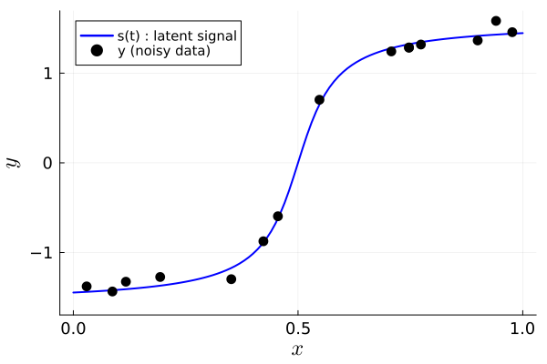
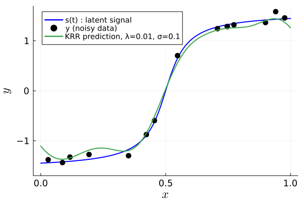
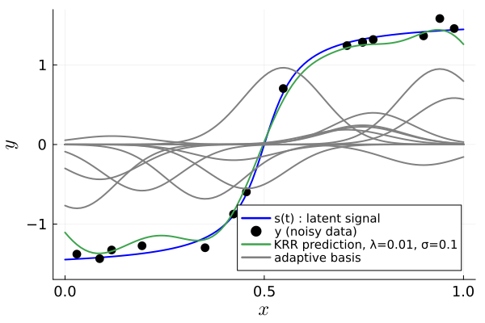

Kernel ridge regression
This example illustrates kernel ridge regression (without offset) using the Julia language.
This page comes from a single Julia file: krr.jl.
You can access the source code for such Julia documentation using the 'Edit on GitHub' link in the top right. You can view the corresponding notebook in nbviewer here: krr.ipynb, or open it in binder here: krr.ipynb.
Setup
Add the Julia packages used in this demo. Change false to true in the following code block if you are using any of the following packages for the first time.
if false
import Pkg
Pkg.add([
"InteractiveUtils"
"LaTeXStrings"
"LinearAlgebra"
"MIRTjim"
"Plots"
"Random"
])
endTell Julia to use the following packages. Run Pkg.add() in the preceding code block first, if needed.
using InteractiveUtils: versioninfo
using LaTeXStrings
using LinearAlgebra: norm, I
using MIRTjim: prompt
using Plots: default, gui, plot, plot!, scatter, scatter!, savefig
using Random: seed!
default(); default(label="", markerstrokecolor=:auto, widen=true, linewidth=2,
markersize = 6, tickfontsize=12, labelfontsize = 16, legendfontsize=10)The following line is helpful when running this jl-file as a script; this way it will prompt user to hit a key after each image is displayed.
isinteractive() && prompt(:prompt);Simulated data from latent nonlinear function
s = (t) -> atan(16*(t-0.5)) # nonlinear function
seed!(0) # seed rng
M = 15 # how many data points
xi = sort(rand(M)) # M random sample locations
y = s.(xi) + 0.1 * randn(M) # noisy samples
t0 = range(0, 1, 101) # fine sampling for showing curve
xaxis = (L"x", (0,1), 0:0.5:1)
yaxis = (L"y", (-1.6, 1.6), -1:1)
p0 = plot(t0, s.(t0); xaxis, yaxis,
color=:blue, label="s(t) : latent signal", legend=:topleft)
scatter!(p0, xi, y, color=:black, label="y (noisy data)")
prompt()Kernel ridge regression
(without offset for simplicity)
kernel(x,z,σ) = exp(-norm(x-z)^2 / (2σ^2)) # Gaussian kernel
σ = 1e-1 # chosen by trial and error
λ = 1e-2
Kmatrix = [kernel(a,b,σ) for a in xi, b in xi] # kernel matrix
w = (Kmatrix + M * λ * I) \ y # weights
kvec(x) = [kernel(xi,x,σ) for xi in xi]
regress(x) = w' * kvec(x)
yh = regress.(t0)
plot!(p0, t0, yh, label = "KRR prediction, λ=$λ, σ=$σ")
prompt()
# savefig(p0, "krr-gauss.pdf")Illustrate kernel contributions
The sum of the M = 15 gray curves is the green KRR prediction.
p2 = deepcopy(p0)
tmp = stack(kvec, t0) .* w
plot!(p2, t0, tmp'; color = :gray, legend = :bottomright)
plot!(p2, [0], [0]; color = :gray, label = "adaptive basis") # for legend
# savefig(p2, "krr-basis.pdf")
This page was generated using Literate.jl.